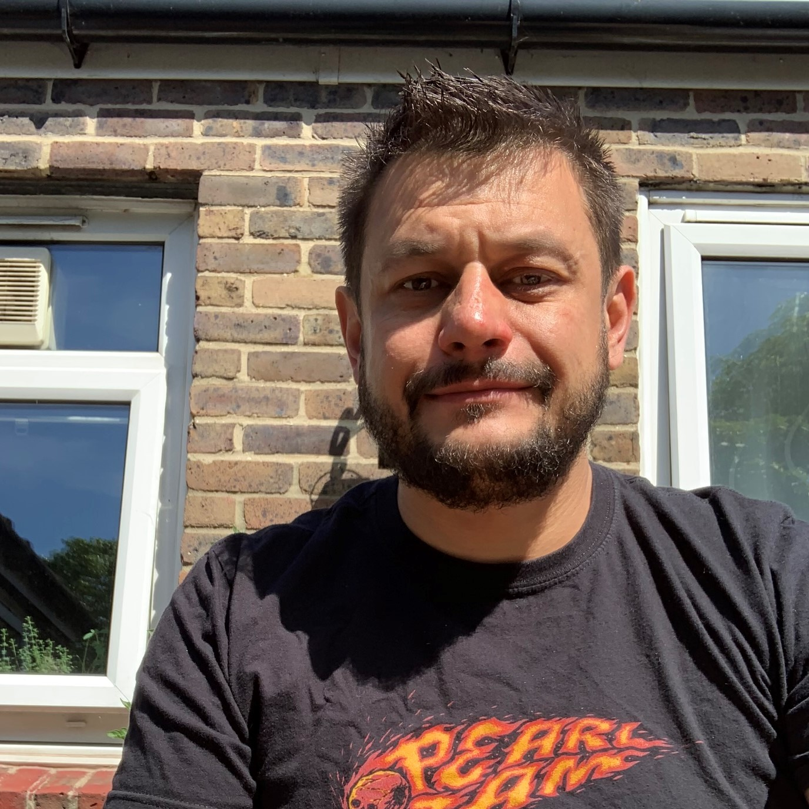

About Me
Hi! I'm Ashley Mortimer. Web Designer/Developer from London,UK. Up until recently I was a General Manager at Pret A Manger for nearly 23 years. Pret was very kind to me over the time I worked there. I have been fortunate enough to run many different shops from flagship stores to airport twin operations and even was able to travel and open shops in Hong Kong and UK.
A strong believer that it's never too late for a change. I have decided to change my career and pursue something more closely related to my studies many years ago at Central St. Martins: College of Art and Design.
The web was in its infancy when I was at school and not a career that I had even considered.
I knew I was not happy in my current role and decided to leave, but didnt have a clue what to do.
After spending some time exploring different avenues I was tinkering on a webpage and thought
I could do better than that! So I decided to learn.
In my free time I love to design, garden, cook and play guitar. A creative soul a heart now putting that designer in me to the test! Hope you like my site!